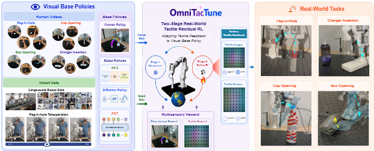
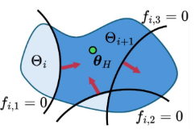
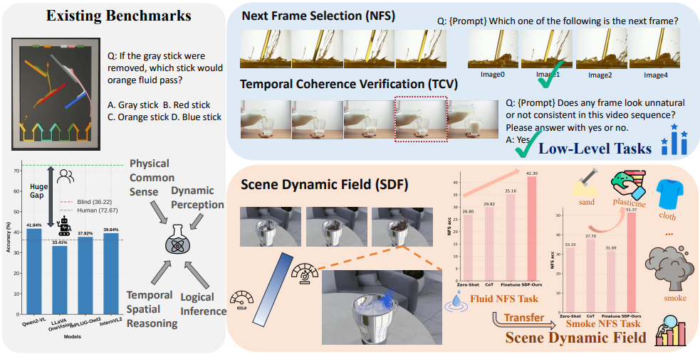

Publications
(* indicates equal contribution; † indicates equal advising)
Highlighted entries are representative works.
|
|

|
OmniTacTune: Policy-Agnostic Real-World RL for Tactile Residual Adaptation of Visual Policies
Kelin Yu*, Haode Zhang*, Harish Ravichandar, Yunhai Han, Ruohan Gao
In Submission
RSS Tactile Sensing for Foundation Models Workshop, 2025
(Best Paper Award)
project page | paper
We propose OmniTacTune, a two-stage residual RL framework that efficiently adapts tactile feedback to pretrained visual policies.
It requires neither offline tactile demonstrations nor base-policy fine-tuning and generalizes across diverse contact-rich tasks, visual policies, and tactile representations.
Across four real-world tasks, it improves visual base policies from 5–40% to 85–100% success within only 40–80 minutes of online interaction.
|
|

|
Robust Reward Alignment via Hypothesis Space Batch Cutting
Zhixian Xie*, Haode Zhang*, Yizhe Feng, Wanxin Jin
ICML, 2025
project page | paper | code
We propose a novel geometric view of reward alignment as an iterative cutting process over the hypothesis space.
Our batched cutting method significantly improves data efficiency by maximizing the value of each human preference query.
We introduce a conservative cutting algorithm that ensures robustness to unknown erroneous human preferences without explicitly identifying them.
|
 >
|
Beyond Static Vision: Scene Dynamic Field Unlocks Intuitive Physics Understanding in Multi-modal Large Language Models
Nanxi Li, Xiang Wang, Yuanjie Chen, Haode Zhang, Hong Li, Yong-Lu Li
ICLR, 2026
paper | code
We propose Scene Dynamic Field (SDF), a cost-efficient framework that integrates physics simulators into multi-task fine-tuning,
substantially improving MLLMs’ intuitive physics understanding and achieving strong generalization across physical domains.
|
Service
Conference Reviewer: ECCV 2026, CoRL 2026
|
The website is built upon this template.
|
|
{kind=link}